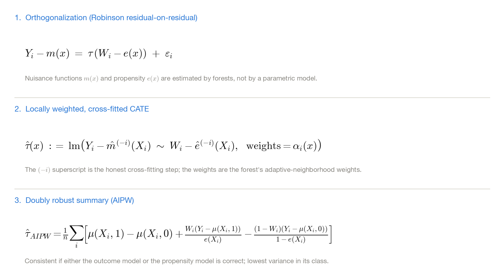
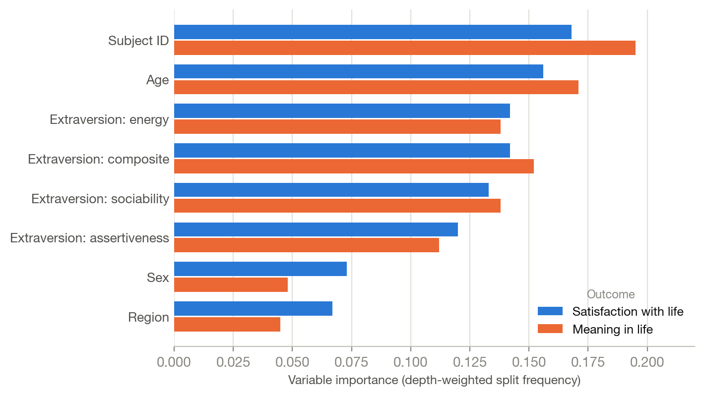

Background
Choi et al. (2022) tracked well-being in South Korea through the early pandemic and reported that extraverts declined more than introverts after social distancing was implemented — an extraversion × distancing interaction, estimated with polynomial regression and mixed-effects models. It is a good study, and its design has three properties I wanted to change.
- A constant effect is assumed Multilevel models estimate one treatment effect shared by everyone; any subgroup structure has to be hypothesized in advance and entered as an interaction term. If the moderator is something the analyst did not think of, the design cannot find it.
- Functional form is committed to in advance Nonlinear effects and higher-order interactions among many covariates are not representable without specifying them.
- The estimand is associational The substantive claim is causal in spirit but the model is descriptive. I wanted the same questions asked with an explicit causal estimand.
Generalized random forests (Athey, Tibshirani & Wager, 2019) address all three. The estimand becomes the conditional average treatment effect τ(x), a function of covariates rather than a constant, and the trees are grown to maximize heterogeneity between subgroups rather than to minimize prediction error — so subgroup structure is discovered rather than pre-specified.
Methods
Data and treatment definitions
- Data Secondary analysis of the longitudinal survey from Choi et al. (2022), publicly archived on OSF and collected in collaboration with the Center for Happiness Studies at Seoul National University: 69,986 participants, 130,798 observations, January 1 – April 7, 2020.
- Outcomes Satisfaction with life, positive affect, negative affect, meaning in life, stress, and a composite well-being index, each on an 11-point scale.
- Two separate causal contrasts The study window splits into three phases, giving one treatment for the outbreak (phase 1 → 2) and a separate treatment for the implementation of social distancing (phase 2 → 3). Each is fitted in its own set of forests rather than being folded into a single time variable.
- Moderator of interest Extraversion, 24 NEO-PI-R items, entered as a composite and as its three facets (sociability, assertiveness, energy) so the analysis could identify which facet drives any heterogeneity, not merely whether extraversion does.
- Repeated measures Causal forests do not natively handle repeated responses, so observations were averaged within participant within phase — following Athey & Wager's treatment of unequally sized clusters — and subject ID was additionally entered as a covariate to absorb individual-level confounding.
The estimator

Inference and interpretation — a gated procedure
Heterogeneous-effect estimates are easy to over-read: a forest will always return a distribution of τ̂(x), whether or not real heterogeneity exists. The analysis was therefore gated behind a formal test at each stage.
- Calibration test first
test_calibration()regresses the doubly robust scores on the mean and differenced forest predictions, returning one coefficient for the average effect and one for heterogeneity. - The gate Heterogeneity was tested only where the average effect was calibrated, and the heterogeneity-interpretation tools were applied only where the heterogeneity coefficient was significant. Several models stopped at the first gate, and that is reported rather than worked around.
- Three triangulating interpretations Variable importance (depth-weighted split frequency, which indexes contribution to heterogeneity because splits maximize it); best linear projection of the CATE onto the covariates; and a comparison of covariate means between the high- and low-CATE halves of the sample. Each alone is insufficient — in particular, a null best-linear-projection result does not license the conclusion that a variable is irrelevant, since it only detects linear structure.
- Software R, the
grfpackage.
Results
Social distancing: a broad, uniform effect

The outbreak: smaller, and genuinely heterogeneous
Only three outcome models passed the average-effect gate for the outbreak contrast. Satisfaction with life increased slightly (+0.053, p = .006) and meaning in life decreased (−0.071, p = .001). Both then showed significant heterogeneity (p < .001), so the interpretation tools were applied to those two.

The three interpretation methods did not fully agree, which is itself the useful finding. Variable importance placed all four extraversion measures above sex and region; the median-split comparison found extraversion reliably higher in the high-CATE group; but the best linear projection found only age and sex significant. Since the projection detects only linear relations between a covariate and the CATE, the reasonable reading is that extraversion contributes to heterogeneity in a way that is not linear — not that it fails to contribute.
What replicated, and what did not
- Replicated: the negative effect of the outbreak on meaning in life, and the broad, uniformly harmful effect of social distancing across all well-being indicators.
- Diverged: the outbreak increased satisfaction with life here, opposite to the original report — consistent with the original only reporting a slight decline in the composite index, where conflicting subscore effects can net out.
- Diverged in both directions on extraversion: the original found no outbreak × extraversion interaction but a significant distancing × extraversion interaction. This analysis found the reverse — heterogeneity in the outbreak effect, none in the distancing effect.